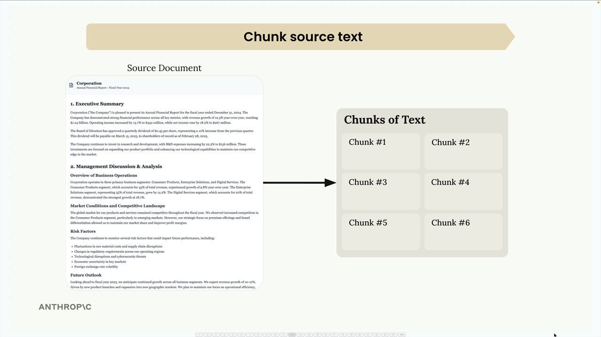
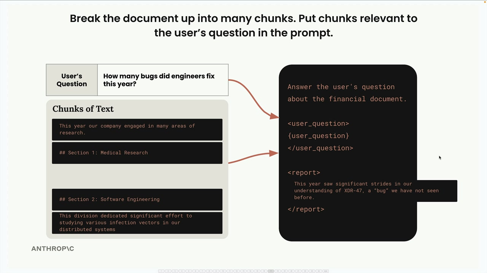
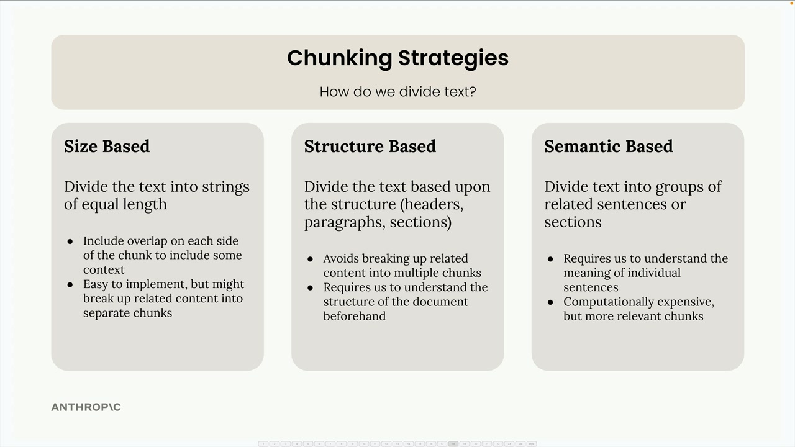
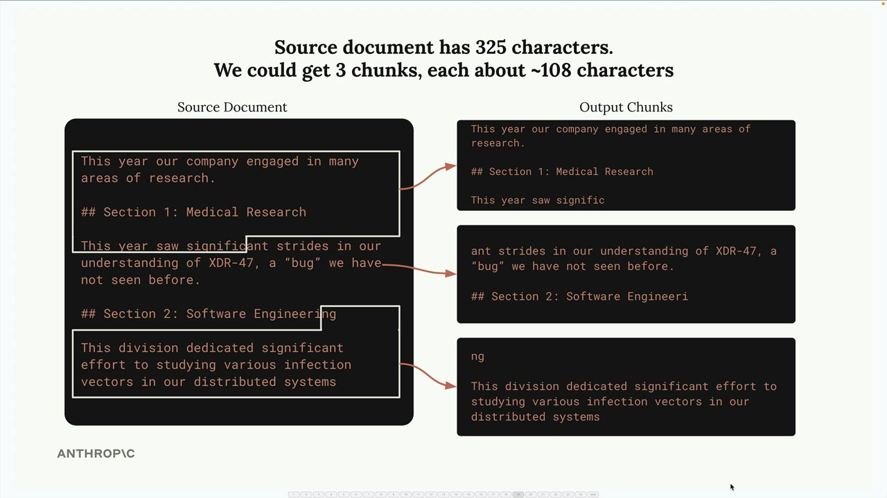
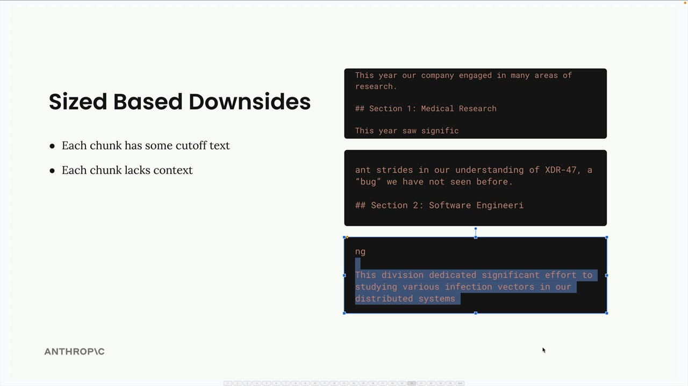
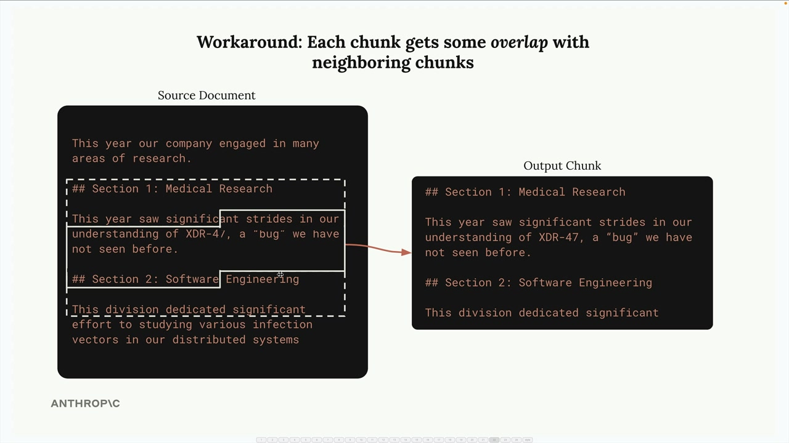
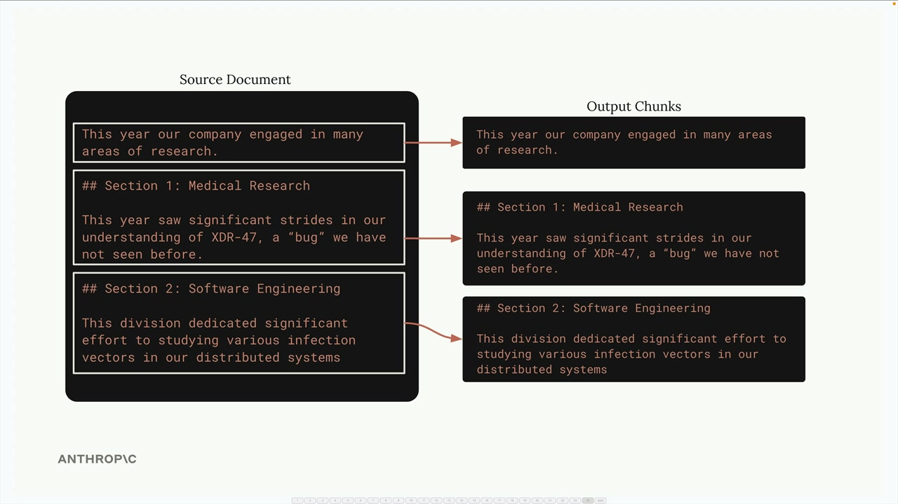

Стратегии разбиения текста
Чему научитесь
Видео 13:08 и текст урока
К концу урока вы сможете:
- объяснить, почему от разбиения зависит качество всего RAG;
- реализовать разбиение по размеру с перекрытием, по структуре и по предложениям;
- выбрать стратегию под свои документы.
Видео и текст урока.
Смотреть урок на Skilljar Text chunking strategies · 13:08Разбиение текста на фрагменты (chunking) — один из самых важных шагов в построении конвейера RAG. От того, как вы делите документы, напрямую зависит качество всей системы. Неудачная стратегия разбиения приводит к тому, что в промпт попадает нерелевантный контекст, и ИИ отвечает совершенно неверно.

Пример: в документе есть разделы о медицинских исследованиях и о разработке ПО. Если разбить неудачно, пользователь, спросивший «How many bugs did engineers fix this year?», может получить информацию о медицинских исследованиях вместо разработки — просто потому, что в медицинском разделе слово «bug» встретилось в другом значении.

Поэтому выбор стратегии разбиения так важен. Рассмотрим три основных подхода.
Разбиение по размеру

Разбиение по размеру (size-based) — самый простой подход: текст делится на строки одинаковой длины. Документ из 325 символов можно разделить на три фрагмента примерно по 108 символов.

Метод легко реализовать, и он работает с документами любого типа, но у него явные минусы:
- слова обрываются посреди предложения;
- фрагменты теряют важный контекст из окружающего текста;
- заголовки разделов могут оказаться отдельно от своего содержимого.

Чтобы смягчить эти проблемы, можно добавить перекрытие (overlap) между фрагментами. Тогда каждый фрагмент включает несколько символов из соседних — это даёт больше контекста и сохраняет целые слова и предложения.

Базовая реализация:
def chunk_by_char(text, chunk_size=150, chunk_overlap=20):
chunks = []
start_idx = 0
while start_idx < len(text):
end_idx = min(start_idx + chunk_size, len(text))
chunk_text = text[start_idx:end_idx]
chunks.append(chunk_text)
start_idx = (
end_idx - chunk_overlap if end_idx < len(text) else len(text)
)
return chunks
Разбиение по структуре
Разбиение по структуре (structure-based) делит текст по естественной структуре документа — заголовкам, абзацам и разделам. Это отлично работает с хорошо оформленными документами вроде файлов Markdown.

Для документа в Markdown можно делить по маркерам заголовков:
def chunk_by_section(document_text):
pattern = r"\n## "
return re.split(pattern, document_text)
Этот подход даёт самые чистые и осмысленные фрагменты, потому что каждый из них — законченный раздел. Но он работает, только если структура документа гарантирована. Многие реальные документы — обычный текст или PDF без явных структурных маркеров.
Разбиение по смыслу
Разбиение по смыслу (semantic-based) — самый продвинутый подход. Текст делят на предложения, а затем с помощью обработки естественного языка определяют, насколько связаны соседние предложения. Фрагменты собирают из групп связанных предложений.
Метод требует много вычислений, но даёт самые релевантные фрагменты. Нужно понимать смысл отдельных предложений, и реализовать его сложнее, чем другие стратегии.
Разбиение по предложениям
Практичный компромисс — разбиение по предложениям. Текст делят на отдельные предложения регулярным выражением, а затем группируют их во фрагменты с необязательным перекрытием:
def chunk_by_sentence(text, max_sentences_per_chunk=5, overlap_sentences=1):
sentences = re.split(r"(?<=[.!?])\s+", text)
chunks = []
start_idx = 0
while start_idx < len(sentences):
end_idx = min(start_idx + max_sentences_per_chunk, len(sentences))
current_chunk = sentences[start_idx:end_idx]
chunks.append(" ".join(current_chunk))
start_idx += max_sentences_per_chunk - overlap_sentences
if start_idx < 0:
start_idx = 0
return chunks
Как выбрать стратегию
Выбор целиком зависит от задачи и от того, что гарантировано в ваших документах:
- по структуре — лучший результат, когда вы контролируете оформление документов (например, внутренние отчёты компании);
- по предложениям — хороший компромисс для большинства текстовых документов;
- по размеру — самый надёжный запасной вариант, который работает с любым содержимым, включая код.
Разбиение по размеру с перекрытием часто выбирают в продакшене: оно простое, надёжное и работает с документами любого типа. Результат не идеален, но фрагменты стабильно получаются разумными и не ломают конвейер.
Помните: единственной «лучшей» стратегии нет. Правильный подход зависит от ваших документов, задач и компромисса между сложностью реализации и качеством фрагментов.
Дальше
Фрагменты есть — теперь нужно находить подходящие. Следующий урок — эмбеддинги текста.
Оригинал урока: Text chunking strategies.